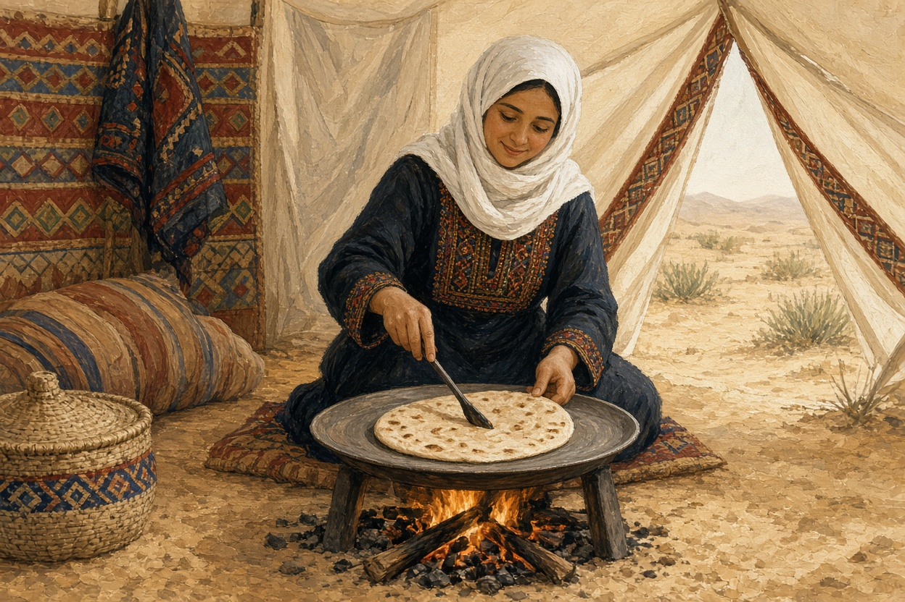
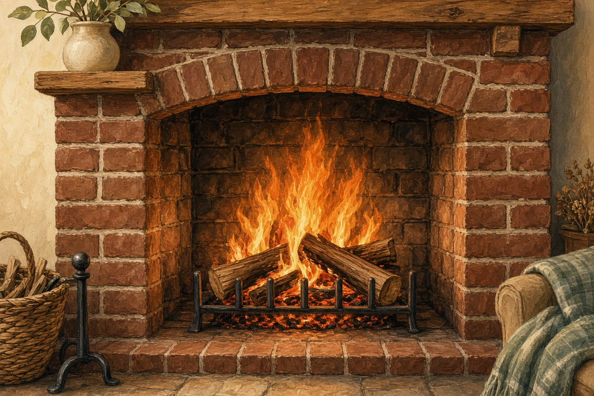

Wood, the first fuel Wood, the first fuel people used העץ, הדלק הראשון העץ, חומר הדלק הראשון
By the end of this page, say why wood was the first fuel. By the end of this page, explain why wood was the first fuel people used. בסוף העמוד תוכלו לומר למה העץ היה הדלק הראשון. בסוף העמוד תוכלו להסביר מדוע העץ היה חומר הדלק הראשון.
Wood was the first fuel people used. For a very long time, wood was the main fuel. Charcoal is made from wood. People used it as fuel too. In some places, people still cook and heat with wood or charcoal. Wood was the first fuel people learned to use. For thousands of years it stayed the main fuel. Charcoal, which is made from wood, was a fuel for a long time too. In some places in the world, people still heat their homes and cook with wood or charcoal. העץ היה הדלק הראשון. הרבה זמן העץ היה הדלק העיקרי. פחם עץ מכינים מעץ. גם הוא דלק. יש מקומות שבהם עדיין מבשלים ומחממים בעץ או בפחם עץ. העץ היה חומר הדלק הראשון שבני האדם למדו להשתמש בו. במשך אלפי שנים הוא היה חומר הדלק העיקרי. גם פחם-עץ, שמכינים מעץ, שימש זמן רב כחומר דלק. גם היום, במקומות אחדים בעולם, מחממים ומבשלים בעץ או בפחם-עץ.


In Israel today, wood is not the main fuel. In Israel today, people no longer use wood as the main fuel. בישראל היום העץ אינו הדלק העיקרי. בישראל, היום, העץ כבר אינו חומר הדלק העיקרי.